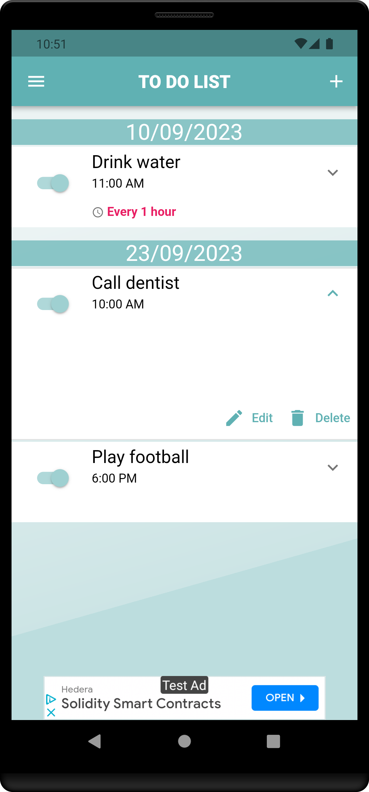
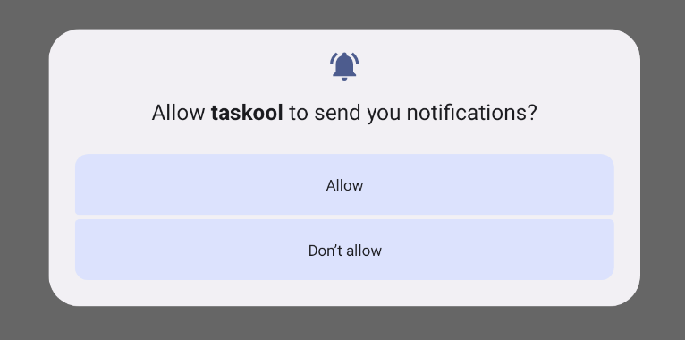
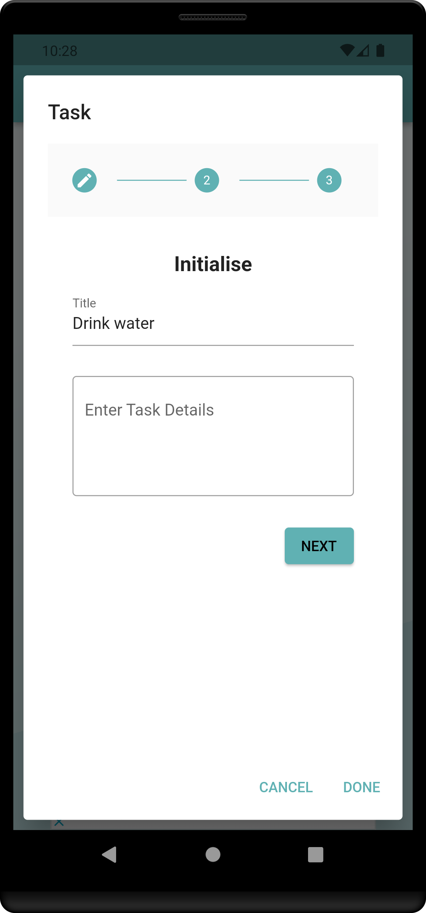
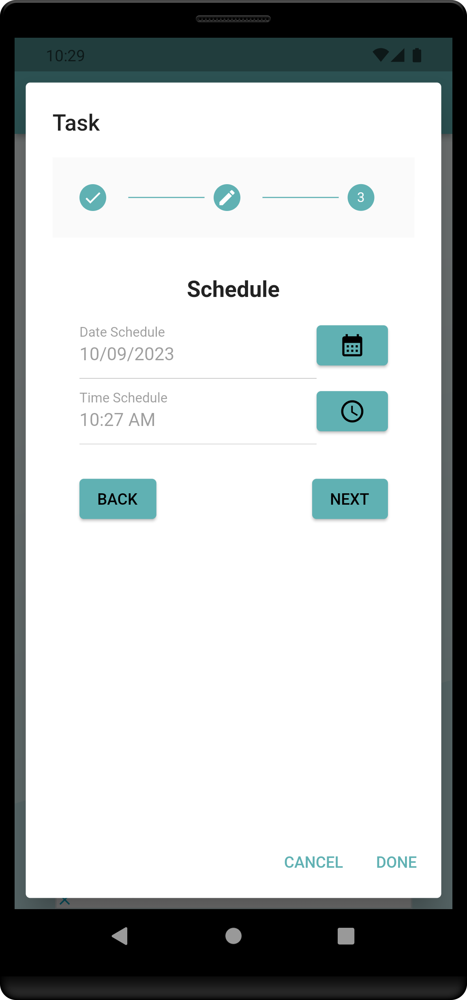
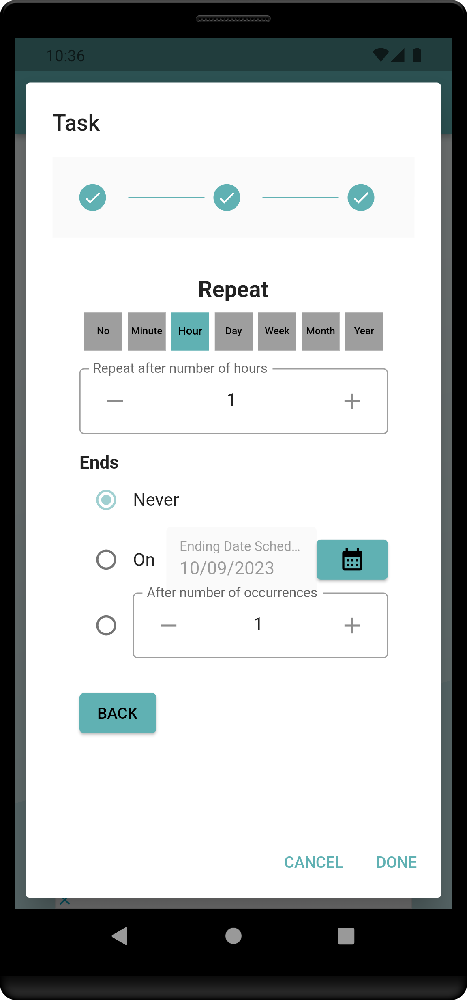
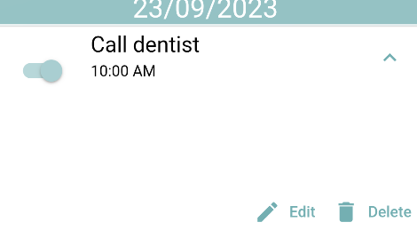
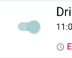
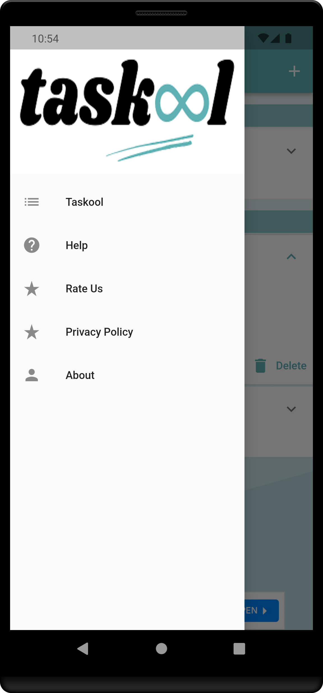

Taskool is a simple task planner and to-do list app that helps you to create and schedule tasks with a straightforward interface. It does not require any registration or login process. 
If this is the app's first launch, a permission pop-up will be displayed.  Click Allow to enable the app to send you notification based on your schedule.
When you click the top-right cross button, a pop-up form for creating your task will appear.  This form allows you to either create a new task or modify an existing one. The Title field is mandatory and represents the name of your task displayed on the main list. It is not necessary to provide the task's details, although it can be a convenient way to display additional information related to the task itself. Clicking the Next button at the bottom right will take you to the next page, while the Back button will return you to the previous page.
After defining the main details, you'll need to select the date and scheduled time for your task, considering both the day and the time.  The scheduled time must be later than the current time.
The last step enables you to reschedule the task at regular intervals if necessary.

The scheduled time should be after the current time. You can continue to receive notifications
for the task after a specified number of minutes, hours, days, weeks, months, or years. To stop
notifications for that particular task, you have three options:
- Never - The task will repeat at predefined intervals.
- On <ending date schedule> - The task will repeat at predefined
intervals
until the specified day.
- After number of occurrences - The task will repeat at predefined intervals
for the total number of times specified by the occurrences.
To save the task, simply press the Done button. If all details are correct, the task will be added to the list under the specified date group, based on the chosen scheduled time. If you do not wish to save the task, click Cancel.
In the task list, click the expand icon located to the right of the task you wish to modify. Two buttons will then appear at the bottom right. Clicking the Edit button enables you to modify the current task's parameters. Conversely, selecting the Delete button will prompt a confirmation dialog for deletion. If confirmed, the task will be deleted. 
To receive notifications for a task, make sure the toggle switch next to the task in the main list is positioned to the right.  To modify this status, a simple click on it will do.
You can find the contact email and other information on the deck menu. 